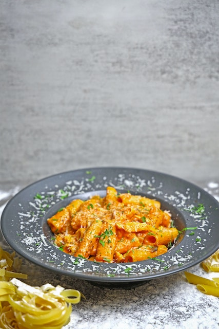

Penne Alla Vodka

Description
Penne alla vodka is a pasta dish made with vodka and penne pasta, usually
made with heavy cream, crushed tomatoes, onions, and sometimes sausage,
pancetta or peas.
The recipe became very popular in Italy and in the United States around
the 1980s, when it was offered to discotheque customers. The recipe thus
became an icon of the fashionable cuisine of the time, which preferred the
use of cream in first courses. Penne alla vodka remains popular in
Italian-American cuisine.
Ingredients
- 3 tbsp. butter
- 1 shallot, minced
- 2 cloves garlic, minced
- 1/2 c. tomato paste
- 1/2 tsp. crushed red pepper flakes
- 2 tbsp. vodka
- Kosher salt
- 1 lb. tubed pasta, such as penne or rigatoni
- 1/2 c. heavy cream
- 1/2 c. freshly grated Parmesan, plus more for serving
- Basil, for serving
Steps
-
In a large skillet over medium heat, melt butter. Add shallot and garlic
and cook, stirring frequently, until softened, 4 to 5 minutes.
-
Add tomato paste and red pepper flakes and cook, stirring frequently,
until paste has coated shallots and garlic and is beginning to darken, 5
minutes.
-
Add vodka to pot and stir to incorporate, scraping up any browned bits
from the bottom of the pot. Turn off heat.
-
Bring a large pot of salted water to a boil and cook pasta until al
dente. Reserve 2 cups of pasta water before draining.
-
Return sauce to medium heat and add 1/4 cup of pasta water and heavy
cream, stirring to combine. Add half the Parmesan and stir until melted.
Turn off heat and stir in cooked pasta. Fold in remaining Parmesan,
adding more pasta water (about a tablespoon at a time) if the sauce is
looking dry. Season with salt if needed. Serve topped with more Parmesan
and torn basil leaves.